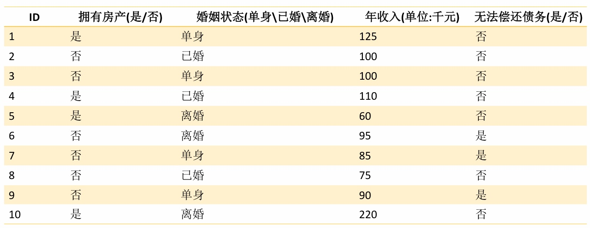
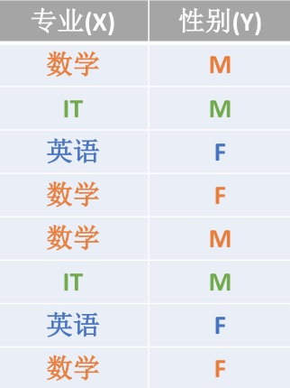
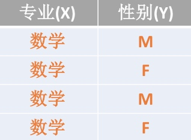
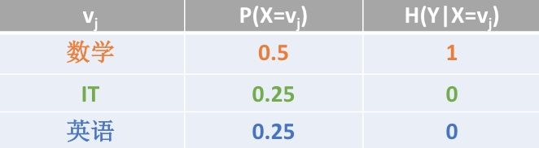

在决策树算法的学习过程中,信息增益是特征选择的一个重要指标.它定义为一个特征能够为分类系统带来多少信息,带来的信息越多,说明该特征越重要,相应的信息增益也就越大

信息熵(Entropy)
\[H(X)=-\sum_{i=1}^mp_i\log_2(p_i)\]
- 信息量:指的是一个样本/事件所蕴含的信息,如果一个事件的概率越大,那么就可以认为该事件所蕴含的信息越少.比如:总所周知的"太阳从东方升起".因为是确定事件,所以不携带任何信息量.
- 信息熵:1948年,香农引入信息熵;一个系统越是有序,信息熵就越低;一个系统越是混乱,信息熵就越高. 所以,信息熵被认为是一个系统有序程度的度量
- 信息熵就是用来描述系统信息量的不确定度(复杂度)的.
High Entropy(高信息熵):表示随机变量X是均匀分布的,各种取值情况是等概率出现的.
Low Entropy(低信息熵):表示随机变量X各种取值不是等概率出现.可能出现有的事件概率很大,有的事件概率很小.
条件熵H(Y|X)
给定条件X的情况下,随机变量Y的信息熵就叫做条件熵
在计算条件熵的情况下,先计算一个小例子.看下面这张图

我们可以得出
P(X=数学)=4/8=0.5
P(Y=M)=4/8=0.5
P(X=数学,Y=F)=2/8=0.25
p(Y=M|X=英语)=0(由图可知,英语专业的都是女生)
根据这个公式,计算H(X)和H(Y)
\[H(X)=-\sum_{i=1}^mp_i\log_2(p_i)\]
因为:
P(X=数学)=0.5
P(X=英语)=0.25
P(X=IT)=0.25
所以:
\[H(X)=-0.5log_2{0.5}-0.25log_2{0.25}-0.25log_2{0.25}=1.5\]
因为:
P(Y=M)=4/8=0.5
P(Y=F)=4/8=0.5
\[H(Y)=-0.5log_2{0.5}-0.5log_2{0.5}=1\]
比如:当专业(X)为数学的时候,Y的信息熵的值为:H(Y|X=数学)

摘出专业都是数学的这部分,性别符合均匀分布.因此条件熵为1
\[H(Y|X=数学)=1\]
给定条件X的情况下,所有不同X值情况下Y的信息熵的平均值叫做条件熵.
\[H(Y|X)=\sum_{j=1}P(X=v_j)H(Y|X=v_j)\]

\[H(Y|X)=0.5*1+0.25*0+0.25*0=0.5\]
给定条件X的情况下,所有不同X值情况下Y的信息熵的平均值叫做条件熵.另外一个公司如下所示:
\[H(Y|X)=H(X,Y)-H(X)\]
事件(X,Y)发生所包含的熵,减去事件X单独发生的熵,即为在事件X发生的前提下,Y发生"新"带来的熵,这个也就是条件熵本身的概念.
参考:https://blog.csdn.net/pipisorry/article/details/51695283
条件熵H(Y|X)公式推导
\[
\begin{aligned}
H(Y|X) & = \sum_{j=1}P(X=v_j)H(Y|X=v_j) \\\
& = \sum_xP(X)H(Y|X) \\\
& = \sum_xp(x)\left(-\sum_yp(y|x)\log(p(y|x))\right) \\\
& = -\sum_x\sum_yp(x,y)log\left(\dfrac{p(x,y)}{p(x)}\right) \\\
& = -\sum_x\sum_yp(x,y)log(p(x,y))-\left [-\sum_x \left (\sum_yp(x,y) \right )\log(p(x)) \right ] \\\
& = H(X,Y)- \left [-\sum_xp(x)\log(p(x)) \right ] \\\
& = H(X,Y)-H(X)
\end{aligned}
\]
信息增益
信息增益恰好是:信息熵-条件熵
也就是说,信息增益代表了在一个条件下,信息复杂度(不确定性)减少的程度.
那么我们现在也很好理解了,在决策树算法中,我们的关键就是每次选择一个特征,特征有多个,那么到底按照什么标准来选择哪一个特征.
这个问题就可以用信息增益率来度量.如果选择一个特征后,信息增益率最大(信息不确定性减少的程度最大),那么我们就选取这个特征
决策树(Decision Tree)
什么是决策树
决策树是在已知各种情况发生概率的基础上,通过构建决策树来进行分析的一种方式,是一种直观应用概率分析的一种图解法;决策树是一种预测模型,代表的是对象属性与对象值之间的映射关系;决策树是一种树形结构,其中每个内部节点表示一个属性的测试,每个分支表示一个测试输出,每个叶节点代表一种类别;决策树是一种非常常用的有监督的分类算法.
决策树的决策过程就是从根节点开始,测试待分类项中对应的特征属性,并按照其值选择输出分支,直到叶子节点,将叶子节点的存放的类别作为决策结果.
决策树分为两大类:分类树和回归树,前者用于分类标签值,后者用于预测连续值,常用算法有ID3,C4.5,CART等
决策树的构建过程
决策树算法的重点是决策树的构造;决策树的构造就是进行属性选择度量,确定各个特征属性之间的拓扑结构(树结构);构建决策树的关键步骤就是分裂属性,分裂属性是指在某个节点按照某一个类特征属性的不同划分构建不同的分支,其目标就是让各个分裂子集尽可能的"纯"(让一个分类子类中待分类的项尽可能的属于同一个类别).
构建步骤如下:
- 将所有的特征看成一个一个的节点;
- 遍历每个特征的每一种分割方式,找到最好的分割点;将数据划分为不同的子节点.eg:\(N_1,N_2...N_m\);计算划分之后所有子节点的"纯度"信息;
- 对第二步产生的分割,选择出最优的特征以及最优的划分方式;得出最终的子节点:\(N_1,N_2...N_m\);
- 对子节点\(N_1,N_2...N_m\)分别继续执行2-3步,直到每个最终的子节点都足够"纯".
决策树特征属性类型
属性类型当然可以是离散型和连续型.
根据特征属性的类型不同,在构建决策树的时候,采用不同的方式,具体如下:
- 属性是离散值,而且不要求生成的是二叉决策树,此时一个属性就是一个分支.
- 属性是离散值,而且要求生成的是二叉决策树,此时使用属性划分的子集进行测试,按照"属于此子集"和"不属于此子集"分成两个分支.
- 属性是连续值,可以确定一个值作为分裂点split_point,按照>split_point和<=split_point生成两个分支.
决策树分割属性选择
决策树算法是一种"贪心"算法策略,只考虑在当前数据特征情况下的最好分割方式,不能进行回溯操作.
对于整体的数据集而言,按照所有的特征属性进行划分操作,对所有的划分操作的结果集的"纯度"进行比较.选择"纯度"越高的特征属性作为当前需要分割的数据集进行分割操作,持续迭代,直到得到最终结果.决策树是通过"纯度"来选择分割特征属性点的.
说了这么多"纯",那么究竟该如何量化纯度值呢?
决策树量化纯度
决策树的构建是基于样本概率和纯度进行构建操作的,那么进行判断数据集是否"纯"可以通过三个公式进行判断,分别是Gini系数,熵(Entropy),错误率.这三个公式值越大,表示数据越"不纯".越小表示越"纯";实践证明这三个公式效果差不多,一般情况使用熵公式
\[Gini=1-\sum_{i=1}^nP(i)^2\]
\[H(Entropy)=-\sum_{i=1}^nP(i)\log_2(P(i))\]
\[Error=1-max \sideset{_{i=1}^n}{}\lbrace P(i) \rbrace\]
决策树量化纯度
当计算出各个特征属性的量化纯度值后使用信息增益度来选择出当前数据集的分割特征属性;如果信息增益度的值越大,表示在该特征属性上会损失的纯度越大,那么该属性就越应该在决策树的上层,计算公式为:
\[Gain=\Delta=H(D)-H(D|A)\]
Gain为A为特征对训练数据集D的信息增益,它为集合D的经验熵H(D)与特征A给定条件下D的经验条件熵H(D|A)之差
决策树算法的停止条件
决策树构建的过程是一个递归的过程,所以必须给定停止条件,否则过程将不会进行停止,一般情况有两种停止条件:
- 当每个子节点只有一种类型的时候停止构建;
- 当前节点中记录数小于某个阈值,同时迭代次数达到给定值时,停止构建过程,此时使用\(\max(p(i))\)作为节点的对应类型
方式一可能会使树的节点过多,导致过拟合(Overfiting)等问题;
比较常用的方式是使用方式二作为停止条件
决策树算法效果评估(重新听,补充这里的推导算法)
决策树的效果评估和一般的分类算法一样,采用混淆矩阵来进行计算准确率,召回率,精确率等指标.
也可以采用叶子节点的纯度值总和来评估算法的效果.值越小,效果越好.
也就是决策树的损失函数(该值越小,算法效果越好)
\[C(T)=\sum_{t=1}^{leaf}\dfrac{|D_t|}{|D|}H(t)\]
决策树直观理解结果计算
决策树生成算法
建立决策树的主要是以下三种算法
- ID3
- C4.5
- CART(Classification And Regression Tree)
ID3算法
ID3算法是决策树的一个经典的构造算法,内部使用信息熵以及信息增益来进行构建;每次迭代选择信息增益最大的特征属性作为分割属性.
也就是会用到前面写到的两个公式
\[H(D)=-\sum_{i=1}^nP(i)\log_2(P(i))\]
\[Gain=\Delta=H(D)-H(D|A)\]
ID3算法优缺点
优点
- 决策树构建速度快,实现简单
缺点
- 计算依赖于特征数目较多的特征,而属性值最多的属性并不一定最优
- ID3算法不是递增算法
- ID3算法是单变量决策树,对于特征属性之间的关系不会考虑
- 抗噪性差
- 只适合小规模数据集,需要将数据放到内存中
C4.5算法
在ID3算法的基础上,进行算法优化提出的一种算法(C4.5);现在C4.5已经是特别经典的一种决策树构造算法;使用信息增益率来取代ID3算法中的信息增益,在树的构造过程中会进行剪枝操作进行优化;能够自动完成对连续属性的离散化处理;C4.5算法在选中分割属性的时候选择信息增益率最大的属性,涉及到的公式为:
\[H(D)=-\sum_{i=1}^nP(i)\log_2(P(i))\]
\[Gain=\Delta=H(D)-H(D|A)\]
\[Gain\_ration(A)=\dfrac{Gain(A)}{H(A)}\]
C4.5算法优缺点
优点
- 产生的规则易于理解
- 准确率较高
- 实现简单
缺点
- 对数据集需要进行多次顺序扫描和排序,所以效率较低
- 只适合小规模数据集,需要将数据放到内存中
总结:属性越多,信息增益率越大
CART算法
使用基尼系数作为数据纯度的量化指标来构建的决策树算法就叫做CART(Classification And Regression Tree,分类回归树)算法.CART算法使用GINI增益作为分割属性选择的标准,选择GINI增益最大的作为当前数据集的分割属性;可用于分类和归类两类问题.强调备注:CART构建的是二叉树.
\[Gini=1-\sum_{i=1}^nP(i)^2\]
\[Gain=\Delta=Gini(D)-Gini(D|A)\]
ID3,C4.5,CART分类算法总结
- ID3和C4.5算法只适合在小规模数据集上使用
- ID3和C4.5算法都是单变量决策树
- 当属性值取值比较多的时候,最好考虑C4.5算法,ID3得出的效果会比较差
- 决策树分类一般情况只适合小数据量的情况(数据可以放内存)
- CART算法是三种算法中最常用的一种决策树构建算法
- 三种算法的区别仅仅只是对于当前树的评价标准不同而已,ID3使用信息增益,C4.5使用信息增益率,CART使用基尼系数
- CART算法构建的一定是二叉树,ID3和C4.5构建的不一定是二叉树
| 算法 | 支持模型 | 树结构 | 特征选择 | 连续值处理 | 缺失值处理 | 剪枝 | 特征属性多次使用 |
|---|---|---|---|---|---|---|---|
| ID3 | 分类 | 多叉树 | 信息增益 | 不支持 | 不支持 | 不支持 | 不支持 |
| C4.5 | 分类 | 多叉树 | 信息增益率 | 支持 | 支持 | 支持 | 不支持 |
| CART | 分类,回归 | 二叉树 | 基尼系数,均方差 | 支持 | 支持 | 支持 | 支持 |
案例一:使用鸢尾花数据分类(分类树案例)
使用决策树算法API对鸢尾花数据进行分类操作,并理解及进行决策树API的相关参数优化
鸢尾花数据集描述
Data Set Information:
This is perhaps the best known database to be found in the pattern recognition literature. Fisher's paper is a classic in the field and is referenced frequently to this day. (See Duda & Hart, for example.) The data set contains 3 classes of 50 instances each, where each class refers to a type of iris plant. One class is linearly separable from the other 2; the latter are NOT linearly separable from each other.
Predicted attribute: class of iris plant.
This is an exceedingly simple domain.
This data differs from the data presented in Fishers article (identified by Steve Chadwick, spchadwick '@' espeedaz.net ). The 35th sample should be: 4.9,3.1,1.5,0.2,"Iris-setosa" where the error is in the fourth feature. The 38th sample: 4.9,3.6,1.4,0.1,"Iris-setosa" where the errors are in the second and third features.
Attribute Information:
- sepal length in cm
- sepal width in cm
- petal length in cm
- petal width in cm
- class:
-- Iris Setosa
-- Iris Versicolour
-- Iris Virginica
分类树和回归树的区别
分类树采用信息增益,信息增益率,基尼系数来评价树的效果,都是基于概率值进行判断的;而分类树的叶子节点的预测值一般为叶子节点中概率最大的类别作为当前叶子的预测值
在回归树中,叶子节点的预测值一般为叶子节点中所有值的均值来作为当前叶子节点的预测值.所以在回归树中一般采用MSE作为树的评价指标,即均方差.
\[MSE=\dfrac{1}{n}\sum_{i=1}^n(y_i-\hat y_i)^2\]
一般情况下,只会使用CART算法构建回归树.
案例二:波士顿房屋租赁价格预测(回归树案例)
决策树过拟合和欠拟合
决策树优化策略
剪枝优化
决策树过渡拟合一般情况是由于节点过多导致的,剪枝优化对决策树的正确率影响是比较大的,也是最常用的一种优化方式
决策树的剪枝是决策树算法中最基本,最有用的一种优化方案,主要分为两大类
决策树的剪枝方案
前置剪枝:在构建决策树的过程中,提前停止.结果是决策树一般比较小,实践证明这种策略无法得到比较好的结果
后置剪枝:在决策树构建好后,然后再开始裁剪,一般使用两种方式:
1. 用单一叶子节点代替整个子树.叶子点的分类采用子树中最主要的分类;
2. 将一个子树完全替代另外一颗子树.
3. 后置剪枝的主要问题是计算效率问题,存在一定的浪费情况.
后置剪枝总体思路(交叉验证):
- 由完全树\(T_0\)开始,剪枝部分节点得到\(T_1\),在此剪枝得到\(T_2\)...直到仅剩树根的树\(T_k\)
- 在验证数据集上对这k+1个树进行评价,选择最优树\(T_a\)(损失函数最小的树)
决策树剪枝过程
对于给定的决策树\(T_0\):
- 计算所有内部非叶子节点的剪枝系数
- 查找最小剪枝系数的节点,将其子节点进行删除操作,进行剪枝得到决策树\(T_k\);如果存在多个最小剪枝系数节点,选择包含数据项最多的节点进行剪枝操作
- 重复上述操作,直到产生的剪枝决策树\(T_k\)只有1个节点
- 得到决策树\(T_0T_1T_2...T_k\)
- 使用验证样本集选择最优子树\(T_a\)
使用验证集选择最优子树的标准,可以使用原始损失函数来考虑:
\[loss=\sum_{t=1}^{leaf}\dfrac{|D_t|}{|D|}H(t)\]
决策树剪枝损失函数及剪枝系数
原始损失函数
\[loss=\sum_{t=1}^{leaf}\dfrac{|D_t|}{|D|}H(t)\]
叶节点越多,决策树越复杂,损失越大;修正添加剪枝系数,修改后的损失函数为
\[loss_{\alpha}=loss+\alpha*leaf\]
考虑根节点为r的子树,剪枝前后的损失函数分别为loss(R)和loss(r),当这两者相等的时候,可以求得剪枝系数
\[loss_{\alpha}(r)=loss(r)+\alpha\]
\[loss_{\alpha}(R)=loss(R)+\alpha*R_{leaf}\]
\[\alpha=\dfrac{loss(r)-loss(R)}{R_{leaf}-1}\]
Random Forest(随机森林)
利用训练数据随机产生多个决策树,形成一个森林.然后使用这个森林对数据进行预测,选取最多结果作为预测结果.
总结
1.分类树和回归树
区别:
a. 分类树中使用信息熵,gini系数,错误率作为数"纯度"的度量指标;回归树中使用MSE,MAE作为树的"纯度"度量指标;
b.分类树使用叶子节点中包含最多那个类别作为当前叶子的预测值;回归树中使用叶子节点中包含的所有样本的目标属性的均值作为当前叶子的预测值.
2.决策树的构建过程
思想:
让每次分裂数据集的时候,让分裂之后的数据集更加的"纯"(让数据更有区分能力)
3.决策树分裂属性选择方式
a.基于最优划分的规则进行选择:迭代计算所有特征属性上所有划分方式后的"纯度",选择划分后更加"纯"的一种方式(信息增益,信息增益率).--->
只能说明在当前数据集上是最优的,所以可能会存在一定的过拟合情况.
b.基于随机的划分规则:每次划分的时候,都是先选择一定数目的特征,然后在这部分特征中选择出一个最优的划分特征.因为每次选的划分特征都是局部最优的,相对来讲,可以增加模型的鲁棒性,降低模型的过拟合性.
4.决策树的欠拟合,过拟合
a.可以通过增加树的深度来缓解决策树欠拟合这个问题
b.我们可以通过限制树的复杂程度来缓解这个过拟合的问题
c.因此也就是找到一个平衡
5.网格交叉验证(GridSearchCV)
6.决策树的效果评估
决策树可视化
决策树可视化可以方便我们直观的观察所构建的树模型;决策树可视化依赖graphiz服务,所以我们在进行可视化之前,安装对应的服务.
安装
下载地址:http://www.graphviz.org/
Mac安装步骤
# 安装graphviz服务
brew install graphviz
# 安装python的graphviz插件
pip install graphviz
# 安装python的pydotplus插件
pip install pydotplus
使用方式
方式一:将模型输出dot文件,然后使用graphviz的命令将dot文件转换为pdf格式的文件
from sklearn import tree
with open('iris.dot','w') as f:
f = tree.export_graphviz(model,out_file=f)
# 命令行执行dot命令 dot -Tpdf iris.dot -o iris.pdf
方式二:直接使用pydotplus插件直接生成pdf文件进行保存
from sklearn import tree
import pydotplus
dot_data = tree.export_graphviz(model,out_file=None)
graph=pydotplus.graph_from_dot_data(dot_data)
graph.write_pdf("iris2.pdf")
# graph.write_png("iris3.png")
方式三:使用Image对象直接显示pydotplus生成的图片
from sklearn import tree
from IPython.display import Image
import pydotplus
dot_data=tree.export_graphviz(model,put_file=None,
feature_names=['sepal length','sepal width','petal length','petal width'],
class_names=['Iris-setosa','Iris-versicolor','Iris-virgincia'],
filled=True,rounded=True,
special_characters=True)
graph=pydotplus.graph_from_dot_data(dot_data)
Image(graph.create_png)
参考
[1]: